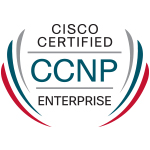
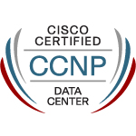
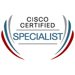
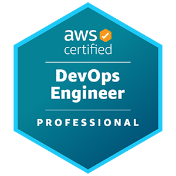

Foco atual
Liderança técnica em segurança e compliance com recorte forte em cloud security, segurança de infraestrutura e automação operacional.
Cloud Security • GRC • Segurança de Infraestrutura
Especialista com 11+ anos de experiência em infraestrutura, redes e segurança da informação, com atuação atual em segurança multi-cloud, compliance, automação e liderança técnica.
Perfil
Liderança técnica em segurança e compliance com recorte forte em cloud security, segurança de infraestrutura e automação operacional.
Combinação de base profunda em redes e infraestrutura com experiência prática em segurança multi-cloud, Python e integração entre áreas técnicas e de governança.
Evolução adjacente para trilhas de DevSecOps e AppSec, sem perder o eixo principal de cloud security, compliance e engenharia operacional.
Expertises
Atuação em ambientes multi-cloud com foco em políticas de segurança, visibilidade de recursos, integração com APIs, relatórios, notificações e suporte à governança.
Base consolidada em redes corporativas, segurança de perímetro, operações N3 e melhoria contínua de ambientes críticos.
Desenvolvimento e sustentação de soluções internas para visibilidade, relatórios, notificações e integração entre times técnicos.
Experiência
Extreme Digital Solutions
Extreme Digital Solutions
Stefanini
IOS
Certificações







O conjunto atual sustenta muito bem o posicionamento em cloud security, segurança de infraestrutura e governança técnica, com boa base para evolução em trilhas de AWS Security, ISO 27001, CISM e CCSP.
Contato
Brasília/DF • Inglês intermediário (B1) • Atuação com times técnicos, governança e operação.